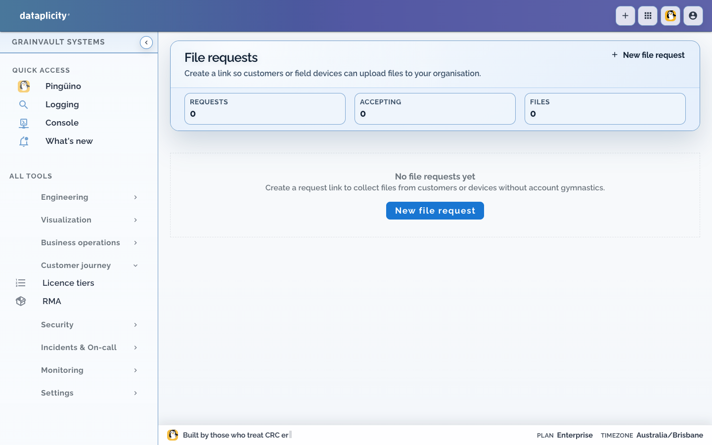
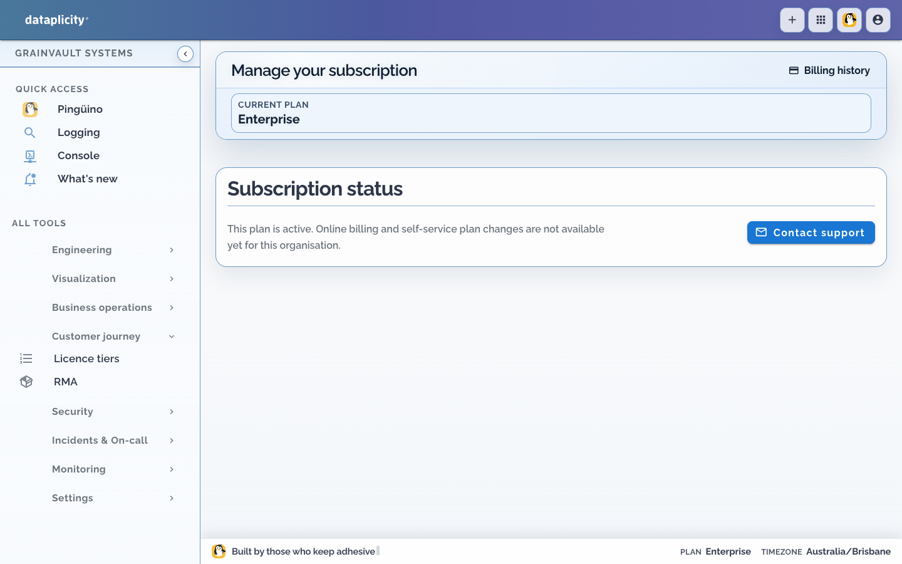

SiloSentry Cloud
app.silosentry.com
Commodity telemetry, farmer dashboards, co-op billing. Domain logic we own.
Fictional OEM · Dataplicity reference company
We sell grain-bin sensors to Midwest elevators. This site is not a pitch deck — it’s how the company actually runs after the hardware ships.
Like Stripe’s Rocket Rides, SiloSentry is a made-up business used to show a real platform. Co-ops buy probes from us. We keep those Linux gateways supportable with Dataplicity — remote shell, Wormhole URLs, alerts, status pages, and OEM tooling — without inventing a VPN product.
What elevators buy
Every unit is a Debian box on cellular or farm Wi‑Fi. No public IP. No inbound SSH. The co-op never opens a firewall hole.
Raspberry Pi 4 + multi-point temp/moisture cable. Watches the grain mass inside a bin.
Fan/VFD control with ambient RH. Runs fans when differential pressure and humidity say so.
LTE aggregator for the elevator. Hosts the local silo UI and bridges to SiloSentry Cloud.
Customers look like Red River Co-op (Grand Forks), Prairie Star (Bismarck), Heartland Grain (Sioux Falls), and High Plains Terminal (Amarillo) — harvest-critical sites where a dead sensor can spoil a bin overnight.
How the company is wired
app.silosentry.com
Commodity telemetry, farmer dashboards, co-op billing. Domain logic we own.
control plane
Identity, presence, Wormhole, terminal, alerts, status, licences/RMA. Ops substrate we don’t reinvent.
SiloSentry Cloud ←API→ Dataplicity
│ ▲
│ outbound TLS
▼ │
Elevator site ── Site Gateway ── Wormhole :8080 UI
├── Probe GW (Silo A / B / C)
└── Aeration Controller
From factory to farm
Device classes are our SKUs inside Dataplicity. Networks are elevators. Tags carry customer, commodity, criticality, and connectivity.
curl -fsSL https://install.dataplicity.com/<key>.sh | sudo bash at first boot. Outbound only.


Support without a truck roll
Every probe and site gateway runs a local HTTP UI on 127.0.0.1:8080 —
calibration, live cable temps, fan overrides. Dataplicity Wormhole publishes a stable HTTPS URL
through the outbound agent. When that’s not enough, L1 opens a browser shell.


systemctl status probe-daemon, journals, modem resets.
Ops & trust




A day in the life
Slack warning on Tower 2 Yellow Corn → Wormhole shows cable segment 4 at 31°C → terminal confirms aeration → file request for dryer logs. Status page stays green: site issue, not platform outage.
Connectivity alert → fleet map isolates Grand Forks LTE → SIM check → installer Field Check + antenna photo via file request → heartbeats resume.
Filter tier:critical → Wormhole healthz green on site gateways →
spot-check probe-daemon on one LTE box per co-op.
OEM customer + licence claim codes with the hardware shipment. Operators get SiloSentry Cloud; Dataplicity stays for our support team.
Commercial loop
End customers live in SiloSentry Cloud. Dataplicity holds customers, licence tiers, claim bundles, warranty, and RMA beside engineering — same org that flashes devices closes returns.


The reusable map
SiloSentry is a hardware company that must stay in the support loop for years after a bin is welded shut. Dataplicity productises that loop.
Device class = SKU → Network = site → Wormhole = local UI → Terminal = break-glass → Alerts/Status = trust → OEM licences/RMA = commercial scale.
Building industrial sensors, EV chargers, cold-chain gateways, or signage? Start with Dataplicity — SiloSentry is how that business looks when it’s honest about the ops plane.